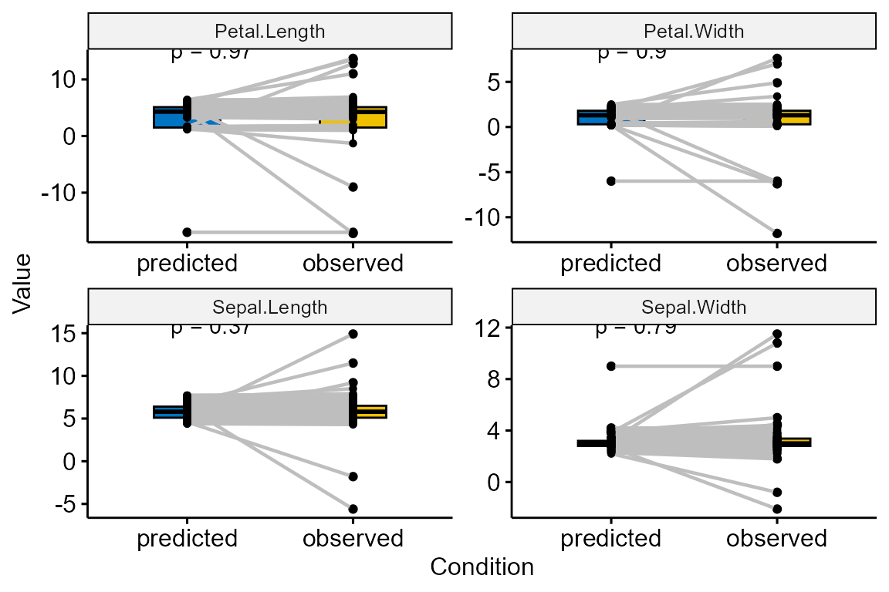

Overview
{outqrf} is an R package used for outlier detection. Each numeric variable is regressed onto all other variables using a quantile random forest (Meinshausen 2006). We use {ranger} package (Wright and Ziegler 2017) to perform the fitting and prediction of quantile regression forests. Next, we will compute the rank of the observed values in the predicted results’ quantiles. If the rank of the observed value exceeds the threshold, the observed value is considered an outlier.
Since the same predicted value might be distributed across multiple quantiles in the predicted quantile results, this affects our location finding for the observed value. Therefore, we also used a method similar to the outForest package to compare the observed value with the 50% quantile value again to determine the final quantile result.
Installation
# Development version
devtools::install_github("flystar233/outqrf")Usage
library(outqrf)
#Generate data with outliers in numeric columns
irisWithOutliers <- generateOutliers(iris, p = 0.05,seed =2024)
# Find outliers by quantile random forest regressions
out <- outqrf(irisWithOutliers,quantiles_type=400)
#>
#> Outlier identification by quantiles random forests
#>
#> Variables to check: Sepal.Length, Sepal.Width, Petal.Length, Petal.Width
#> Variables used to check: Sepal.Length, Sepal.Width, Petal.Length, Petal.Width, Species
#>
#> Checking: Sepal.Length Sepal.Width Petal.Length Petal.Width
out$outliers
#> row col observed predicted rank
#> 1 32 Sepal.Length 14.9 5.40 0.9975
#> 2 35 Sepal.Length -1.8 4.60 0.0025
#> 3 84 Sepal.Length 11.5 6.80 0.9975
#> 4 129 Sepal.Length -5.6 6.30 0.0025
#> 5 49 Sepal.Width 10.8 3.85 0.9975
#> 6 131 Sepal.Width -2.1 2.70 0.0025
#> 7 137 Sepal.Width 11.5 3.20 0.9975
#> 8 36 Petal.Length 12.8 1.60 0.9975
#> 9 73 Petal.Length -17.2 4.40 0.0025
#> 10 107 Petal.Length 13.7 5.60 0.9975
#> 11 123 Petal.Length -9.0 5.20 0.0025
#> 12 140 Petal.Length 13.5 5.80 0.9975
#> 13 10 Petal.Width -11.8 0.20 0.0025
#> 14 14 Petal.Width -6.3 0.20 0.0025
#> 15 34 Petal.Width 7.6 0.40 0.9975
#> 16 66 Petal.Width 7.0 2.00 0.9950
#> 17 113 Petal.Width -6.1 1.80 0.0025Evaluation on diamonds (Small Dataset)
library(outqrf)
irisWithOutliers <- generateOutliers(iris, p = 0.05,seed =2024)
qrf <- outqrf(irisWithOutliers,quantiles_type=400)
#>
#> Outlier identification by quantiles random forests
#>
#> Variables to check: Sepal.Length, Sepal.Width, Petal.Length, Petal.Width
#> Variables used to check: Sepal.Length, Sepal.Width, Petal.Length, Petal.Width, Species
#>
#> Checking: Sepal.Length Sepal.Width Petal.Length Petal.Width
evaluateOutliers(iris,irisWithOutliers,qrf$outliers)
#> Actual Predicted Cover Coverage Efficiency
#> 32.00 17.00 17.00 0.53 1.00
plot(qrf)#>
#> Outlier identification by quantiles random forests
#>
#> Variables to check: Sepal.Length, Sepal.Width, Petal.Length, Petal.Width
#> Variables used to check: Sepal.Length, Sepal.Width, Petal.Length, Petal.Width, Species
#>
#> Checking: Sepal.Length Sepal.Width Petal.Length Petal.Width
Evaluation on diamonds (Big Dataset)
library(outqrf)
library(ggplot2)
library(dplyr)
data <- diamonds|>select(price,carat,cut,color,clarity)
data2 <- outqrf::generateOutliers(data, p = 0.001,seed =2024)
# 108
qrf <- outqrf(data2,num.threads=8,quantiles_type=400)
#>
#> Outlier identification by quantiles random forests
#>
#> Variables to check: price, carat
#> Variables used to check: price, carat, cut, color, clarity
#>
#> Checking: price carat
#The process can be slow because it needs to predict the value at 400|1000 quantiles for each observation.
evaluateOutliers(data,data2,qrf$outliers)
#> Actual Predicted Cover Coverage Efficiency
#> 108.00 369.00 103.00 0.95 0.28